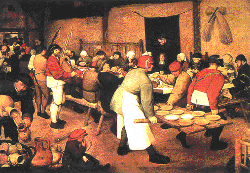
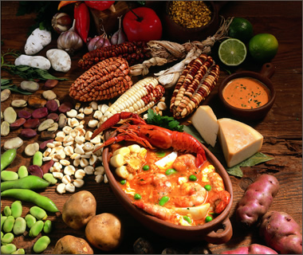
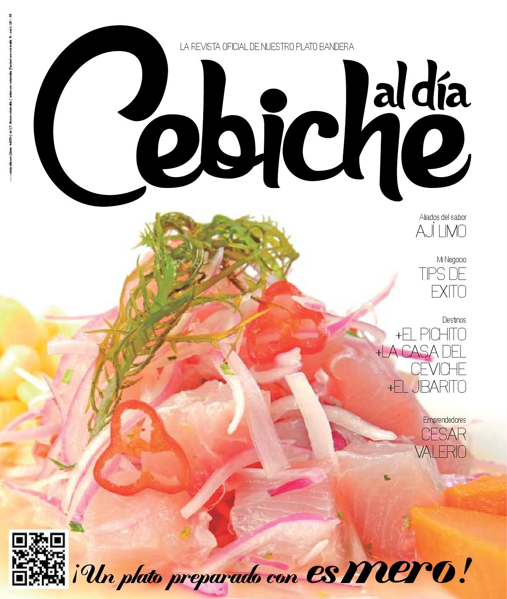

Historia de la cocina peruana

La cocina peruana es una de las más variadas del mundo, tiene herencia pre-incaica, incaica, español, inmigración africana, francesa, chino-cantonesa, japonesa e italiana principalmente hasta el siglo XIX. Reúne una gran diversidad de mezclas: la criolla junto a la gastronomía de otros 4 continentes. Con la llegada de los españoles con nuevas especies de animales, frutas y plantas; la cocina criolla se fusiono con la española Y dio paso a la comida criolla.
 La llegada de esclavos africanos Que cocinaban en la época del virreinato aporto una evolución más en la gastronomía del país, no solo en sabor sino también en color. En el siglo XIX los peruanos se sintieron fascinados por los franceses a causa de su revolución y aportaron la presencia del el mousse. Después de la independencia peruana se decretó la entrada libre de extranjeros, la mayoría de ellos europeos. En 1899 llegaron los primeros inmigrantes asiáticos, dejando su huella distintiva en las tendencias de la cocina peruana. Los japoneses abrieron sus primeros restaurantes ofreciendo una amplia gama de platos de pescado y marisco fresco.
 Con la llegada de asiáticos y su pescado se juntaron los limones y cebollas traídas por los españoles y dieron paso a uno de los paltos insignia del país “El ceviche”. Originalidad, variedad, aroma, textura y sabor. Esas son algunas de las razones por las que la cocina peruana es reconocida como una de las mejores expresiones gastronómicas del mundo. Así lo indica la resolución que la declara como Patrimonio Cultural de la Nación.